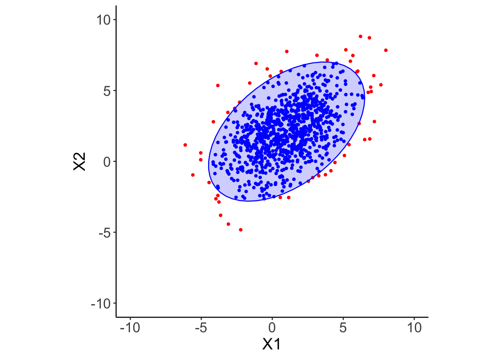
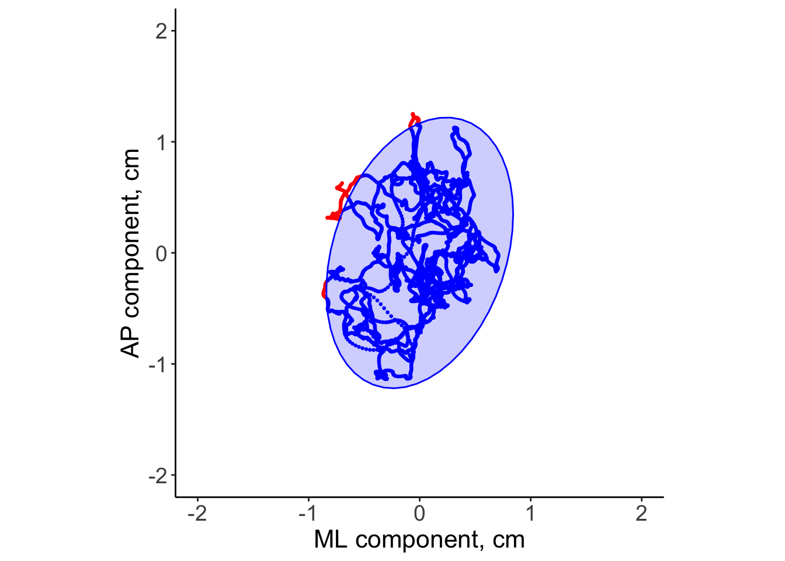

Computing probability regions in the space where sample data are assumed to live relates to the determination of regions that we are confident are occupied by the underlying population with the prescribed value of probability. After reviewing the theory for multivariate normal distributions, I present an example of application from the analysis of posturographic data.
Author
Angelo Maria Sabatini
Published
May 2, 2024
Prediction hyperellipsoid
Consider the case of a multivariate random variable \(\mathbf{X}\in\mathbb{R}^d\), whose distribution is normal with mean value \(\mathbf{\mu}\) and covariance matrix \(\mathbf{C}\):
We suppose that either the mean value or the covariance matrix are unknown; they can be estimated using the sample mean, denoted by \(\bar{\mathbf{x}}\):
where \(\mathbf{x}_{\text{new}}\) is the new observation for which the prediction interval is desired. \(F_{0.95,n,n-d}\) is the quantile with probability 0.95 of the Fisher’s \(F\)-distribution with \(d\) and \((n-d)\) degrees of freedom.
Equation 1 is the formula for predicting the next single observation where we only have estimates of the mean value and the covariance matrix from the sample.
Another interesting formula can be elaborated as for the computation of the volume of the prediction hyperellipsoid. Recall that the prediction hyperellipsoid is the transformation of the hypersphere of radius
by the linear transform of matrix \(\Sigma^{1/2}\). Let \(V\) the volume of the hypersphere of radius \(r\) in an \(d\)-dimensional space. The volume of the hyperellipsoid can be obtained from \(V\) by multiplying with the determinant of the linear transform:
where \(t_{0.975,n-1}\) is the quantile with probability 0.975 of the \(t\)-Student distribution with \(n-1\) degrees of freedom. Therefore Equation 4 can be written:
Equation 8 is the equation of the \(95\%\) prediction ellipse for a bivariate normal distribution, whose sample mean value and sample covariance matrix are calculated from a large-size dataset. The ellipse is also called the concentration ellipse. Using Equation 5 the area \(A=V_2\) of the concentration ellipse can be computed from Equation 2-Equation 3 when \(n\) is large as follows:
I used the function rmvnorm() from the package rvnorm for the simulation of the dataset, and the function stat_ellipse() of ggplot2 for drawing the ellipse, Figure 1. Using stat_ellipse() dispensed me from computing eigenvalues and eigenvectors of the sample covariance matrix, which are needed to evaluate the orientation and the eccentricity of the ellipse in the Cartesian plane. This computation can be based on a simple principal component analysis (PCA).
Code
library(tidyverse)library(mvtnorm)set.seed(1492)sigma <-matrix(c(5, 2, 2, 4), ncol =2)n <-1000x <-rmvnorm(n = n, mean =c(1, 2), sigma = sigma)dist <-qchisq(0.95, 2) # to define the 95% probability contourm <-matrix(data =c(0, 0), ncol =1) for (i in1:2) m[i] <-mean(x[, i]) # sample mean valueC <-cov(x) # sample covariance matrixS <-solve(C) # inverse of CQ <-numeric(n) for (i in1:n) Q[i] <-t(x[i, ] - m) %*% S %*% (x[i, ] - m) # computation of the quadratic formdf <-data.frame(x, Q)df <- df %>%mutate(inside = Q <= dist)aest <-round(100*(1-sum(!df$inside)/n), 2) # estimated coveragearea <- pi*dist*sqrt(det(C)) # area of the concentration ellipse my_theme =theme(axis.title.x =element_text(size =16),axis.text.x =element_text(size =14),axis.title.y =element_text(size =16),axis.text.y =element_text(size =14),legend.title =element_text(size =14),legend.text =element_text(size =14),panel.border =element_blank(),panel.grid.major =element_blank(),panel.grid.minor =element_blank(),panel.background =element_blank(),axis.line =element_line(colour ="black"),aspect.ratio =1,legend.position ="none")ggplot(df, aes(x = X1, y = X2, color = inside)) +scale_colour_manual(values =c("red", "blue")) +geom_point(size =1) +stat_ellipse(geom ="polygon", type ="norm", level =0.95, color ="blue", fill ="blue", alpha =0.2) +scale_x_continuous(limits =c(-10, 10)) +scale_y_continuous(limits =c(-10, 10)) + my_theme

Figure 1: The curve corresponding to the value \(\chi^2(0.95,2)=5.99\) contains \(95\%\) of the variable pairs; the points falling outside the concentration ellipse are plotted in red.
The coverage of the concentration ellipse is 94.9%. Moreover, the code calculates the area enclosed by the concentration ellipse, Equation 9: 74 (arbitrary units).
An application to posturography
Postural control is often quantified by recording the trajectory of the center of pressure (CoP) during human quiet standing. This quantification has many important applications, including the assessment of balance disorders and the early detection of balance degradation to prevent falls in geriatric populations. The CoP trajectory in time, reported as the anteroposterior (AP) component (forward/backward) and the mediolateral (ML) component (left/right) paired together to form the so-called stabilogram, is typically acquired by means of a force platform, on top of which tested subjects are asked to stand in their upright posture for a while, typically 60 s, as still as possible. Manipulation of testing conditions, e.g., presence or absence of vision, different kind of surfaces for the feet to stay on are possible, so as to gain further insights about the postural control system performance.
Among the many CoP features that have been introduced in the literature, few of them have to do with the concentration ellipse of the CoP. E.g., the principal sway direction, to represent the relative contribution of the ML and AP components to the CoP fluctuations, in terms of the angle between the AP axis and the direction of the main eigenvector produced by the PCA. Another feature of interest, the one considered in this post, is the area of the concentration ellipse, also called the sway area(Schubert and Kirchner 2014). For instance, an increase in this feature value among elderly people has been associated with a higher risk of fall. I want to show here an example of calculation of the sway area using the code above, by taking an exemplary stabilogram from a recently published dataset (Santos et al. 2017), Figure 2.
Figure 2: Anteroposterior and mediolateral components of the CoP for the subject with ID 1 from the Duarte’s dataset, tested Open-Eyes on a Rigid surface (first trial out of three).
The stabilogram with the concentration ellipse superimposed on it are shown in Figure 3.
Code
x <-cbind(df$x_ml, df$x_ap) # detrending already doned <-qchisq(0.95, 2) # to define the 95% probability contourn <-nrow(x)C <-cov(x) # sample covariance matrixS <-solve(C) # inverse of CQ <-numeric(n) for (i in1:n) Q[i] <-t(x[i, ]) %*% S %*% x[i, ] # computation of the quadratic formdf_Q <-data.frame(x, Q)df_Q <- df_Q %>%mutate(inside = Q <= dist)aest <-round(100*(1-sum(!df_Q$inside)/n), 2) # estimated coveragearea <- pi*dist*sqrt(det(C)) # area of the concentration ellipse ggplot(df_Q, aes(x = X1, y = X2, color = inside)) +scale_colour_manual(values =c("red", "blue")) +geom_point(size =0.5) +stat_ellipse(geom ="polygon", type ="norm", level =0.95, color ="blue", fill ="blue", alpha =0.2) +labs(x ="ML component, cm",y ="AP component, cm") +scale_x_continuous(limits =c(-2, 2)) +scale_y_continuous(limits =c(-2, 2)) + my_theme

Figure 3: Exemplary stabilogram with superimposed the concentration ellipse - parts of the CoP trajectory outside the concentration ellipse are displayed in red.
The coverage of the concentration ellipse is 97%. The sway area is 3.09 cm\(^2\).
References
Santos, Damiana A. dos, Claudiane A. Fukuchi, Reginaldo K. Fukuchi, and Marcos Duarte. 2017. “A Data Set with Kinematic and Ground Reaction Forces of Human Balance.”PeerJ 5 (July): e3626. https://doi.org/10.7717/peerj.3626.
Schubert, Patric, and Marietta Kirchner. 2014. “Ellipse Area Calculations and Their Applicability in Posturography.”Gait & Posture 39 (1): 518–22. https://doi.org/10.1016/j.gaitpost.2013.09.001.